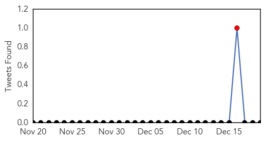

Mumps
30-Day Web Trend
3 alerts, 0 warnings
30-Day Twitter Trend
1 alerts, 0 warnings

Article Locations

Article Confidences

Top Articles:
- 0.898
- Virus makes comeback
Top Tweets:
-
No tweets found for Dec 19, 2014
Influenza
30-Day Web Trend
1 alerts, 0 warnings

30-Day Twitter Trend
2 alerts, 0 warnings

Article Locations

Article Confidences
Top Articles:
- 0.998
- First reported flu deaths include woman in Snohomish County
- 0.996
- The Flu Virus Is Widespread In Georgia, Shuts Down Entire Polk County School System
- 0.987
- Flu death reported in Stephens County
- 0.979
- Influenza, other illnesses hit some western Minnesota schools hard
- 0.977
- Avian Flu Never Seen Before In North America Shows Up In B.C.
- 0.977
- Avian flu confirmed in wild birds in Wash, Ore
- 0.973
- B.C. avian flu virus related to lethal strain in Asia
- 0.964
- Tri-City United experiencing large number of absences due to illness
- 0.956
- CDC: Flu is Widespread in 29 States - Story
- 0.917
- Vaccinations recommended during peak flu season
- 0.880
- Flu cases now widespread in South Carolina
- 0.873
- Bozeman hospital acts to prevent flu spread
- 0.873
- Bozeman hospital acts to prevent flu spread : State-and-regional
- 0.820
- Flu shots No thanks better safe than sorry
- 0.817
- News, Sports, Jobs, Community - The Leader Herald
- 0.813
- Flu Widespread in 29 States, CDC Says
- 0.797
- Tips on avoiding flu
- 0.791
- USDA reports bird flu H5N8 found in Oregon poultry
- 0.770
- UPDATE: 11th farm hit with Avian flu, outbreak that started in Chilliwack enters U.S.
- 0.756
- Good Samaritan Hospital tightening visitor guidelines
- 0.654
- Child Dies of Influenza in Pima County
- 0.615
- VIDEO: Flu cases climbing in Northern Kentucky
- 0.572
- Bird Flu Found in ‘Backyard’ Oregon Poultry Flock, USDA Says
Top Tweets:
-
No tweets found for Dec 19, 2014